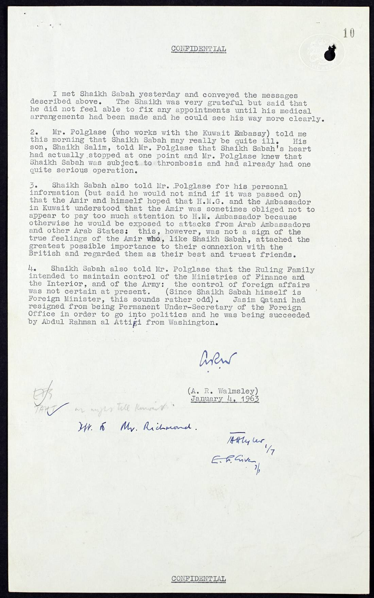
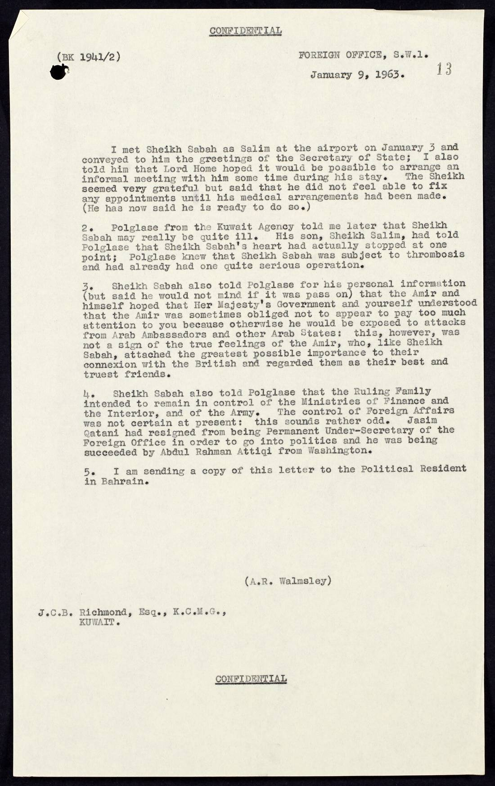

The Amir appoints Abdulrahman Salim Al-Ateeqi as Under-Secretary of the Ministry of Foreign Affairs in place of Jasim Al-Qatami, who had resigned.
Why it matters
It confirms that Jassim served as Under-Secretary of Foreign Affairs after independence, dates the end of that post, and a second file gives the reason: he resigned to go into politics, ahead of the first National Assembly elections.
Who is meant
The same Jassim Al-Qatami as the records that give his full name: Director of Police, resigned at Suez, later a nationalist member of the National Assembly.
Page copies
FO 371/168783, p. 5

FO 371/168784, p. 10FO 371/168784, p. 12

FO 371/168784, p. 13
Original text
TRANSLATION of Amirie Decree No. 2/63 appointing the Under-Secretary in the Ministry of Foreign Affairs
We, Abdullah al-Salim al-Sabah, Amir of the State of Kuwait, at the request of the Minister of Foreign Affairs, and with the agreement of the Council of Ministers decree the following:
Article 1
Sayyid Abdul Rahman Salim al-Atiqi shall be appointed Under-Secretary in the Ministry of Foreign Affairs in the place of Sayyid Jasim al Qatami who has tendered his resignation.
Article 2
The Minister of Foreign Affairs shall carry out this Decree, which shall come into effect from the date of its enactment.
Amir of the State of Kuwait, Abdullah al-Salim al-Sabah.
Enacted on January 2, 1963 and promulgated on January 6, 1963.
FO 371/168784, page 10, record of a conversation with Sheikh Sabah, January 4, 1963:
Jasim Qatani had resigned from being Permanent Under-Secretary of the Foreign Office in order to go into politics and he was being succeeded by Abdul Rahman al Attigi from Washington.
English translation
ترجمة المرسوم الأميري رقم ٢ لسنة ١٩٦٣ بتعيين وكيل وزارة الخارجية
نحن عبدالله السالم الصباح أمير دولة الكويت، بناء على عرض وزير الخارجية، وبعد موافقة مجلس الوزراء، رسمنا بالآتي:
مادة ١
يُعيّن السيد عبدالرحمن سالم العتيقي وكيلا لوزارة الخارجية بدلا من السيد جاسم القطامي الذي قدم استقالته.
مادة ٢
على وزير الخارجية تنفيذ هذا المرسوم، ويُعمل به من تاريخ صدوره.
أمير دولة الكويت، عبدالله السالم الصباح.
صدر في ٢ يناير ١٩٦٣ ونُشر في ٦ يناير ١٩٦٣.
الملف FO 371/168784، الصفحة ١٠، محضر محادثة مع الشيخ صباح، ٤ يناير ١٩٦٣:
استقال جاسم القطامي من منصب الوكيل الدائم لوزارة الخارجية ليتفرغ للعمل السياسي، ويخلفه عبدالرحمن العتيقي القادم من واشنطن.
Notes
The decree was issued in Arabic. This is an Arabic rendering of the British translation, not the original wording of the decree. The three pages of FO 371/168784 are copies of the same record; the typist spelled the name "Qatani" in the original.
Others named
Abdulrahman Salim Al-Ateeqi
Sources
The National Archives, London, digitised by the Arabian Gulf Digital Archive (agda.ae). Images reproduced by permission of The National Archives, London, England.
Archive reference
FO 371/168783 · Visit of foreign minister to UK
FO 371/168784 · Visit of Heir Apparent to London: health
How this text was made: Typed from the archive's own text reading of the scan, corrected against the scan where the reading was garbled. … marks text left out. Arabic translation by Claude; please review.